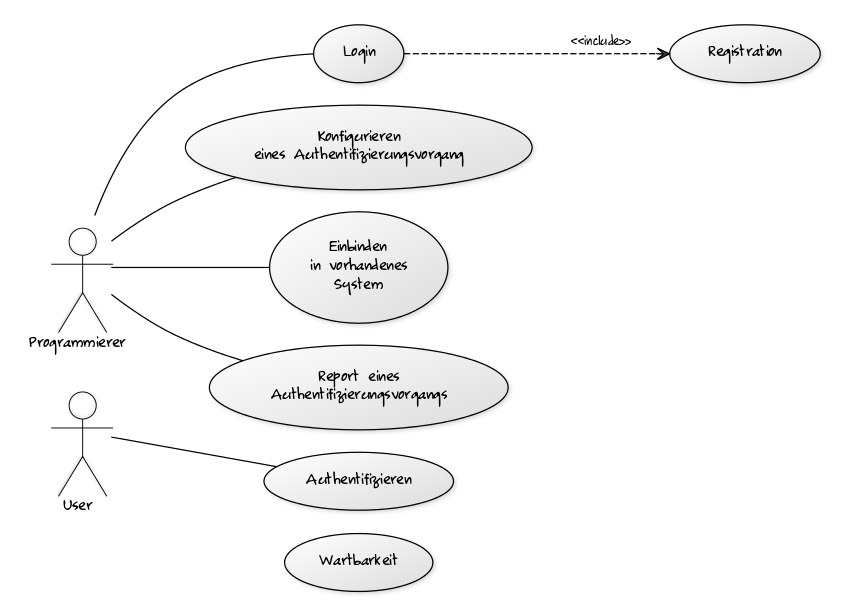
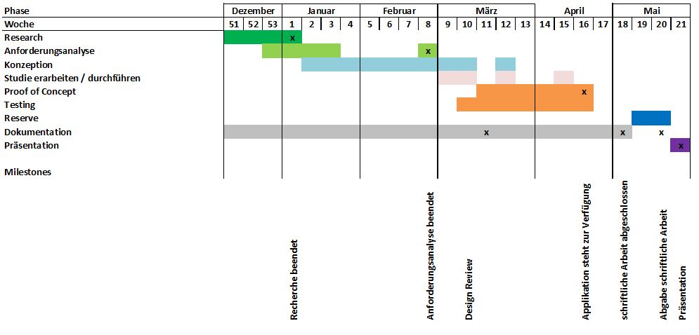

Design Review
Individuell konfigurierbarer Authentifizierungsservice für Votings und Wettbewerbe
Student Christian Bachmann
Betreuer Jaime Oberle | Auftraggeber inaffect AG, Thomas Joss
Agenda
- Kurzer Überblick
- Rückblick
- Zwischenstand
- Demonstration
- Ausblick
- Diskussion
- Beantwortung der Fragen
Individuell konfigurierbarer Authentifizierungsservice für Votings und Wettbewerbe
Screencast blick.ch Voting Makro (November 2015)Rückblick
Resarch
- Grundlagen: Sicherheitbasis, Alternative Produkte
- Authentifizierungskomponenten
Anforderungsanalyse

Komponenten

Overview

Zwischenstand

Diskusion
Beantwortung der Fragen gemäss Reglement
Vielen Dank
github.com/coffeefan/bachelorarbeitDie Präsentation kann als PDF exportiert werden.
Druckansicht